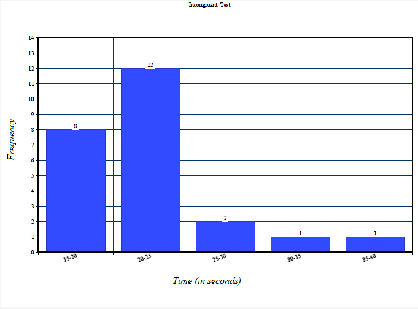

Our independent variables are the task conditions; whether the colour of the word matches the name and we have a congruent condition, or the colour of the word does not match the name and we have an incongruent condition. Our dependent variables are the times taken to complete the task for each condition.
The null hypothesis (H0 ) is that there will be no difference in the mean times taken for the different tasks in the population. The alternative hypothesis (HA) is that there will be a statistically significant difference between the population mean time for the congruent task (μ C) and the population mean time for the congruent task (μ I).
H0 : μ C = μ I
HA : μ C ≠ μ I
I intend to do a paired, two tailed t-test at an alpha level of 0.5. A two tailed test gives less risk of bias and gives us more confidence in the result than if we used an alternative hypothesis that the times for the incongruent task would be higher. Our sample size is less than 30 and we do not know the population statistics, so a t-test is more appropriate than a z-test. Each subject does both tasks, so these are paired samples. For this reason I will be doing a dependent samples t-test. Lastly, even though these samples are small, I'm assuming the sample means accurately represent the population means.
The congruent task has a mean of 14.05 and a sample deviation of 3.56. The incongruent task has a mean of 22.02 and a sample deviation of 4.8.
The difference of the means is 7.96 and the deviation of the differences is 4.86. This gives us a Cohen's d of 1.64, which shows the means are significantly different from each other.
4.

Figures 1 (Congruent Test) and 2 (Incongruent Test) don't really give us much information. We can see that with these bin sizes the mean and the mode fall in the same bin, but it is probably still better to use the mean as a measure of centre for better accuracy. Both are a little skewed, but would probably be more normal with larger samples and smaller bin sizes. Comparing the two we can already see that the values in Figure 2 are higher than Figure 1, and that the variability is higher too.
With Figure 3 (Comparing Samples) we can see an immiediate difference in the two sets of results. The values in the Incongruent sample are clearly higher than in the Congruent sample.
5. The t-statistic is 8.02. For a two tailed test at an alpha level of .05, the t-critical value is 2.069. Based on these results I would reject the null hypothesis and conclude that the incongruent task is statistically significantly more difficult than the congruent task. This matches my expectation that the results would be statistically significantly different.
T(23) = 8.02, p < 0.0001, two tailed.
Confidence interval on the mean difference; 95% CI = (.01, 4.12).
6. The value of r2 is .74, so there's a large amount of the difference in scores on the incongruent task that could be said to be due to the extra difficulty of the task. Other factors may include fatigue, etc.
Anecdotally, we sometimes play the stick drop game or the opposites game in our gym during our warm up. In the stick drop game the coach shouts instructions (Right, Left, Up or Down) and we have to react to it. For example; if the coach shouts “right”, everybody has to let go of their stick, move to the right and grab the next stick before it hits the ground. There's a penalty for every time a stick hits the ground.
In the opposites game, the instructions are the same, but we have to do the opposite of what is said. For example; if the coach shouts “down”, everybody has to jump. There always seems to be a lot more stick drops when playing the opposites game.
The Stroop effect has many overlapping dimensions and different things (e.g. fatigue) can effect the response time. Tasks like the Flanker Task or Cross Modal Tasks are sometimes considered 'Stroop like', but better answers to these two questions would probably require a large amount of research.
Resources : I used the online Graph Pad calculator (http://www.graphpad.com/quickcalcs/) to find the exact p-value.